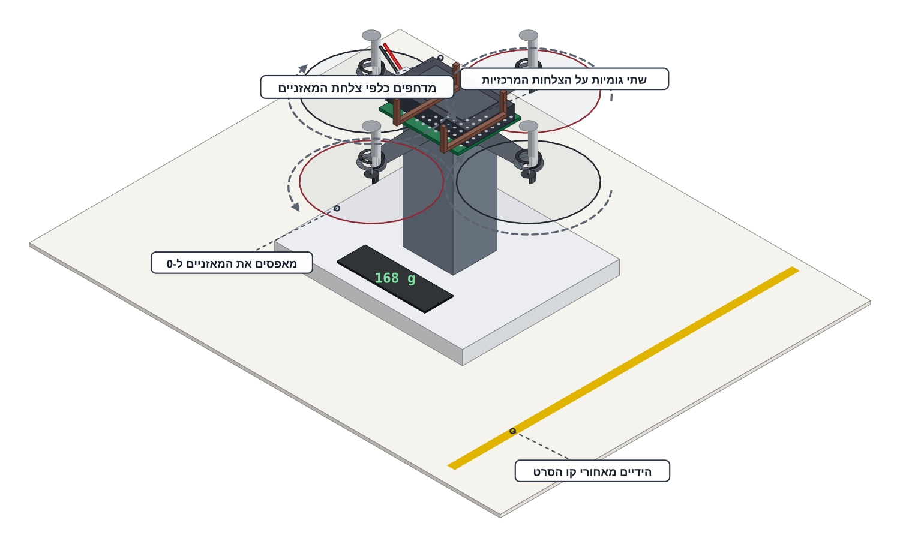

מודדים כמה חזק הרחפן מושך כלפי מעלה ומחליטים לפי מספרים אם מותר לו לטוס.
זו הפעם הראשונה בפרויקט שמדחף מסתובב. המורה מחלק את המדחפים, מרכיב את המתקן, מחבר את הסוללה ולוקח אותה בחזרה בסוף השלב.
משקפי מגן לכל מי שנמצא בחדר, שיער אסוף ושרוולים מופשלים. המלחם כבוי, מנותק וקר על המעמד. עמדת הבדיקה נמצאת מחוץ למעגל התעופה.
המדחפים עולים אחרונים ויורדים ראשונים. הם נמצאים בשתי הקופסאות של המורה והוא מחלק אותם רק כאן, בעמדת הבדיקה, כשהסוללה עדיין בחוץ. גם הסוללה בידי המורה: הוא מוציא אותה מהתיק, הוא מחבר אותה והוא לוקח אותה בחזרה.
הידיים של כולם מאחורי קו הסרט שעל השולחן — לפחות 50 ס"מ מהמדחפים — מהרגע שהסוללה נכנסת ועד שהיא יוצאת.
STOP היא מילה שכל אחד בחדר יכול להגיד. כשהיא נאמרת: המחוון יורד ל-0, לוחצים DISARM והידיים של כולם נעצרות. המורה מחליט מה קורה אחר כך.
שני מצבים — שני כללים שונים לשעת חירום:
בלי מדחפים — מושכים את תקע הסוללה ראשון — ואת זה כל תלמיד רשאי לעשות.
עם מדחפים — אף יד לא מתקרבת לרחפן: המחוון ל-0, לוחצים DISARM, אומרים STOP ומחכים שכל ארבעת המדחפים ייעצרו. רק אז המורה מנתק את הסוללה — כי התקע יושב מתחת למדחפים.
עם מדחפים לא נוגעים ברחפן. רק המורה נוגע בו ורק אחרי שכל מדחף נעצר.

exhaust ^ ^ ^ ^ (to the ceiling) +----------------------------------+ | DRONE - UPSIDE DOWN | <-- 2 rubber bands +----------------------------------+ across the centre plates props v v v v (to the pan) | | >= 65 mm prop plane to pan +-------+ top <= 45 mm | POST | post >= 300 g +-------+ ..... 30 cm backup line, slack ================================== || KITCHEN SCALE - tare = 0 || ==================================
למה הפוך? רחפן שעומד ישר מנשב אוויר היישר על צלחת המאזניים והמספר יוצא נמוך בהרבה מהאמת. הפוך, הדחף לוחץ את הרחפן אל העמוד והמספר אמיתי. לתוכנה זה לא משנה דבר — בקוד של בדיקת המנועים אין חיישן ולכן הפיכת הרחפן לא משנה בו כלום.
מרכיבים משקפי מגן, אוספים שיער ומפשילים שרוולים — כל מי שנמצא בחדר, גם המורה. בודקים שהמלחם כבוי, מנותק וקר.
הסוללה עדיין אצל המורה והמדחפים עדיין בקופסאות.
המורה מוסר ארבעה מדחפים — שניים מכל קופסה. מרכיבים אותם לפי הזוגות:
לוחצים כל מדחף ישר למטה על הציר של 1.0 מ"מ עד שהוא יושב. מושכים כל אחד בעדינות: מדחף שנשלף בקלות חוזר לקופסה ולוקחים חלופי.
כרטיס R1 מראה את צורת הלהבים והקופסאות מסומנות CW ו-CCW.
שמים על מאזני המטבח את הרחפן עם ארבעת המדחפים ואת הסוללה שהמורה מביא — יחד. המספר שמתקבל הוא המשקל הכולל (AUW). כותבים אותו בטבלה שבהמשך הכרטיסייה.
זה המספר שכל שאר השלב מושווה אליו — כמה גרם צריך להרים. הסוללה עדיין לא מחוברת.
המורה מניח את הרחפן הפוך על ראש העמוד — המדחפים כלפי צלחת המאזניים והפליטה כלפי התקרה — ומהדק אותו בשתי גומיות שעוברות על הצלחות המרכזיות, לא על הזרועות ולא על המנועים.
הסוללה יושבת בטבעות ה-O שלה ובודקים שהיא לא נופלת מהמפרץ כשהרחפן הפוך. מישור המדחפים לפחות 65 מ"מ מעל צלחת המאזניים (קוטר של מדחף אחד) וראש העמוד לא רחב מ-45 מ"מ בערך.
קושרים חוט גיבוי של 30 ס"מ מבסיס העמוד אל לולאת הקשירה של השלדה, רפוי. מעמידים עמוד ורחפן על המאזניים ומאפסים אותם ל-0 (tare) כשהכול כבר במקום.
החוט הוא רשת ביטחון ולא חלק מהמבנה — אם הוא מתוח המאזניים ישקרו. חוט הקשירה של מעגל התעופה נשאר בעוגן שלו ולא מגיע לשולחן. המורה מושך את הגומיות בארבעה כיוונים ובודק שהן מחזיקות.
המורה מחבר את הסוללה. בטלפון: מתחברים לרשת DRONE-xx, פותחים את דף בדיקת המנועים ולוחצים ARM כשהמחוון על 0.
מכאן ועד שהסוללה יוצאת — הידיים של כולם מאחורי קו הסרט.
בודקים כיוון, מנוע אחד בכל פעם. לוחצים FRONT: הקריאה על המאזניים עולה למספר חיובי — המדחף מנשב אוויר על הצלחת, כלומר הוא מרים. אחר כך RIGHT, BACK ו-LEFT.
קריאה שנשארת קרוב לאפס או יורדת למספר שלילי = המנוע הזה מסתובב הפוך. משאירים אותו בלי ✓ וממשיכים למנוע הבא.
בעוצמת הכפתורים (כ-25%) מנוע בודד נותן רק 5–10 גרם — קוראים את הסימן ולא את הגודל. אם סימן לא ברור: מפעילים את כל הארבעה מהמחוון על 40% ומשווים למה שמתקבל עם שלושה.
מסמנים ✓ לכל מנוע שנתן קריאה חיובית — כלומר מרים.
נשאר מנוע בלי ✓? התיקון הוא עבודת הלחמה ולא עבודת שולחן — ולכן הוא נעשה רק אחרי שמסיימים את המדידות שבהמשך.
הסדר: DISARM ← המורה מוציא את הסוללה ← מורידים את כל ארבעת המדחפים לקופסאות ← הרחפן חוזר לעמדת העבודה. שם המורה מלחים מחדש את שני החוטים של אותו מנוע ומחליף ביניהם על הפדים שלו.
מריצים שוב על אותו ערוץ את בדיקת הרציפות M+ ↔ M− של שלב 6 וחוזרים לעמדת הבדיקה: מדחפים שוב (מושכים כל אחד), עמוד, גומיות, איפוס, סוללה מהמורה ובדיקת כיוון חוזרת לאותו מנוע.
המנועים האלה מתהפכים לפי כיוון החשמל — לכן החלפת שני החוטים היא כל התיקון ואין צורך במנוע חדש.
שלוש קריאות דחף. בכל עצירה מחכים שנייה שהמנועים יעלו ושהמאזניים יתייצבו, קוראים וכותבים בטבלה:
מוצאים את נקודת הריחוף. חוזרים ל-50% ועולים בקפיצות של 5% ובכל קפיצה מסתכלים על המאזניים. אחוז המחוון שבו הקריאה עוברת בפעם הראשונה את המשקל הכולל — זו נקודת הריחוף. כותבים אותה.
המחוון ל-0, לוחצים DISARM והמורה מוציא את הסוללה.
מחשבים: הקריאה ב-100% מחולקת במשקל הכולל = יחס הדחף למשקל (T/W). כותבים אותו כמספר.
מורידים את ארבעת המדחפים לקופסאות לפני שהרחפן עוזב את עמדת הבדיקה. הסוללה חוזרת למורה.
בשלב הבא צריך כבל USB — ועם מדחפים לא מחברים USB אף פעם.
אלה המספרים של הרחפן שלכם. הם נשמרים במחשב הזה.
המורה קורא את נקודת הריחוף שכתבתם וכותב את שורת ההחלטה על הכרטיסייה.
טסים — קשורים לחוט, כמו כל טיסת תרגול בפרויקט הזה.
רק קשורים ועד גובה 30 ס"מ — וסולם המשקל לפני המפגש הבא.
סולם המשקל קודם ואין טיסה במפגש הזה — וכך גם אם הקריאה לא עברה את המשקל הכולל אפילו ב-100%.
המורה כתב את שורת ההחלטה על הכרטיסייה.
נקודת ריחוף גבוהה היא לא כישלון אלא תוצאת מדידה. הפתרון הוא להוריד גרמים מהרחפן — לזה קוראים סולם המשקל — והמורה מחליט מאיפה מתחילים. התשובה אף פעם אינה יותר גז.
משקל כולל, שלוש קריאות דחף, נקודת ריחוף ויחס — כולם כתובים על הכרטיסייה. כל ארבעת המנועים מרימים ולא דוחפים.
המספר על המאזניים חיובי וגדל ככל שהמחוון עולה.
זה הפרויקט האחד שבו החומרה יכולה לפגוע בכם — המדחפים והסוללה. בגלל זה המורה מחזיק את שניהם, בגלל זה חובשים משקפי מגן בכל רגע שמנוע יכול להסתובב, בגלל זה הרחפן תמיד על חוט ובגלל זה כל אחד רשאי להגיד STOP. כל הכללים בכרטיסיית R1.